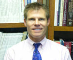

About Us
Cumberland Plastic Surgery specializes in both Cosmetic and Reconstructive Surgery. Non surgical procedures provided also.
Dr. John David Rosdeutscher is Board Certified in Plastic and Reconstructive Surgery and Otolaryngology, (surgery of the head and neck).
Choosing to have plastic surgery is an important decision, and so is selecting a plastic surgeon. Whether you're considering cosmetic surgery to improve your appearance, or reconstructive surgery to correct defects or improve function, you want a board-certified surgeon with the skill and training to help achieve your goals.
Dr. Rosdeutscher is a member of the American Society of Plastic Surgeons, the largest plastic surgery specialty organization in the world, and is here to guide you through the process of discovering what plastic and reconstructive surgery can do to improve your life and your appearance.
Call (615)467-3977 to schedule a consultation to discuss your needs, and the procedures appropriate for you.
What does "Board Certified" mean?
A Board Certified Plastic Surgeon has achieved the highest standards of training requirements of the American Board of Plastic Surgery, the only group recognized for certification in plastic surgery.
Currently, any licensed physician can practice as a plastic, cosmetic or aesthetic surgeon, even without meeting the necessary requirements which qualify the physician to be Board Certified. Since most cosmetic operations can be performed in a doctor's office, the American Medical Association has little control over this. Any other "board" with the words "plastic" or "cosmetic" in its title is not recognized as an acceptable certifying organization by the American Board of Medical Specialties, the only authority that can approve a board in the United States.
About Dr. Rosdeutscher
John David Rosdeutscher, M.D. is a native of Bowling Green, KY. He went to College and Medical School at Vanderbilt University. While in college he earned Phi Beta Kappa and graduated Magna Cum Laude. While a medical student, he served as class social chairman his first 2 years and class vice-president his third year. He volunteered as chairman of the recycling project and student coordinator in the Diabetes Research Program. During his fourth year he served as student-body president and was on the chancellor’s committee on Diversity. He received the Merck Manual award as well as the Deans award for leadership and service.
After medical school, Dr. Rosdeutscher did an internship in general surgery and residency in Otolaryngology/Head & Neck Surgery at University of Cincinnati. He then did a residency in Plastic and Reconstructive Surgery at University Of Louisville, including hand surgery training with Kleinert, Kutz, and Associates of Louisville Hand Surgery.
After training, Dr. Rosdeutscher moved back to Nashville where he has practiced since 1998. He is a certified diplomate by both the American Board of Otolaryngology/Head & Neck Surgery and American Board of Plastic Surgery. He has multiple publications in peer-reviewed journals and has regularly presented his work at regional and national meetings. He has been inducted into the American Society of Plastic Surgery, Southeastern Society of Plastic and Reconstructive Surgeons, and is a fellow of American Academy Otolaryngology/Head &Neck Surgery.
Dr. Rosdeutscher served as Assistant Professor of Surgery and Chief of Otolaryngology and Plastic Surgery at Meharry Medical College and Metro Nashville General Hospital from 2000-2003. He is currently an Assistant Clinical Professor of Otolaryngology and Plastic Reconstructive Surgery at Vanderbilt University School of Medicine and has been active in teaching medical students and resident physicians.
Dr. Rosdeutscher regularly volunteers his services at Siloam Family Health Clinic and has served in overseas missions. He is an active member of Hillsboro Presbyterian Church. He lives in Nashville with his wife Kimberly, a practicing pediatrician, and their two sons Jordan born in 1997 and Noah born in 2002.
- Summit Medical Center
- Southern Hills Medical Center
- Centennial Medical Center
- Baptist Hospital
- Vanderbilt University Children's Hospital
HOSPITAL AFFILIATIONS
- Summit Surgery Center
- Nashville Surgery Center
SURGERY CENTERS AFFILIATIONS
What does "Board Certified" mean?
What does "Board Certified" mean?
A Board Certified Plastic Surgeon has achieved the highest standards of training requirements of the American Board of Plastic Surgery, the only group recognized for certification in plastic surgery.
Choosing to have plastic surgery is an important decision, and so is selecting a plastic surgeon. Whether you're considering cosmetic surgery to improve your appearance, or reconstructive surgery to correct defects or improve function, you want a board-certified surgeon with the skill and training to help achieve your goals.
Dr. Rosdeutscher is a member of the American Society of Plastic Surgeons, the largest plastic surgery specialty organization in the world, and is here to guide you through the process of discovering what plastic and reconstructive surgery can do to improve your life and your appearance.
Call (615)467-3977 to schedule a consultation to discuss your needs, and the procedures appropriate for you.
section heading
Cumberland Plastic Surgery specializes in both Cosmetic and Reconstructive Surgery. Non surgical procedures provided also.
Dr. John David Rosdeutscher is Board Certified in Plastic and Reconstructive Surgery and Otolaryngology, (surgery of the head and neck).
Choosing to have plastic surgery is an important decision, and so is selecting a plastic surgeon. Whether you're considering cosmetic surgery to improve your appearance, or reconstructive surgery to correct defects or improve function, you want a board-certified surgeon with the skill and training to help achieve your goals.
Dr. Rosdeutscher is a member of the American Society of Plastic Surgeons, the largest plastic surgery specialty organization in the world, and is here to guide you through the process of discovering what plastic and reconstructive surgery can do to improve your life and your appearance.
Call (615)467-3977 to schedule a consultation to discuss your needs, and the procedures appropriate for you.
section heading
Cumberland Plastic Surgery specializes in both Cosmetic and Reconstructive Surgery. Non surgical procedures provided also.
Dr. John David Rosdeutscher is Board Certified in Plastic and Reconstructive Surgery and Otolaryngology, (surgery of the head and neck).
Choosing to have plastic surgery is an important decision, and so is selecting a plastic surgeon. Whether you're considering cosmetic surgery to improve your appearance, or reconstructive surgery to correct defects or improve function, you want a board-certified surgeon with the skill and training to help achieve your goals.
Dr. Rosdeutscher is a member of the American Society of Plastic Surgeons, the largest plastic surgery specialty organization in the world, and is here to guide you through the process of discovering what plastic and reconstructive surgery can do to improve your life and your appearance.
Call (615)467-3977 to schedule a consultation to discuss your needs, and the procedures appropriate for you.